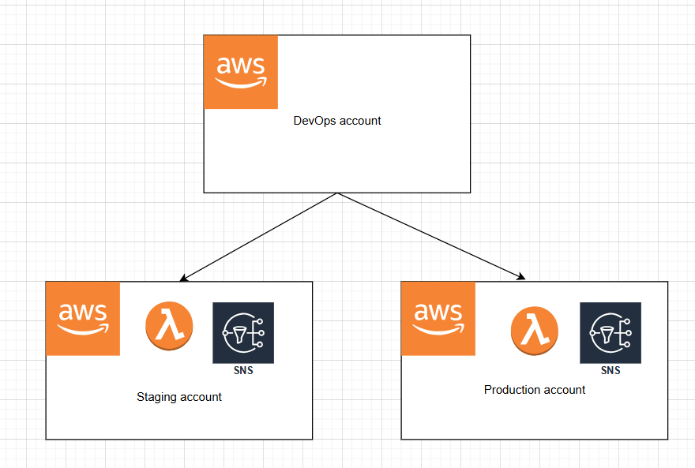

Adding a Message Broker

We will be using Terraform to provision SNS in staging and production environments.
There are different ways of using Terraform, depending on your AWS setup:
Single AWS account deployment
If all your environments (staging, production...) are in one account, then when you provision resources, you have to avoid naming conflict. For example:
Production:
arn:aws:sns:us-east-1:123456789012:MyTopic-Prod
Staging:
arn:aws:sns:us-east-1:123456789012:MyTopic-Staging
Here's an example of provisioning SNS:
| production/main.tf |
|---|
| terraform {
backend "s3" {
bucket = "dep-terraform-state"
key = "production/terraform.tfstate"
region = "ap-southeast-2"
dynamodb_table = "terraform-state-locking"
encrypt = true
}
required_providers {
aws = {
source = "hashicorp/aws"
version = "~> 5.75.1"
}
}
}
module "ap-prod" {
source = "../modules/resources" # (1)
aws_region = "ap-southeast-2" # (2)
env = "prod" # (3)
}
module "na-prod" {
source = "../modules/resources"
aws_region = "us-east-1"
env = "prod"
}
|
- Resources are defined in modules for reusability
- Passing variables to modules
- Passing variables to modules
| staging/main.tf |
|---|
| terraform {
backend "s3" {
bucket = "dep-terraform-state"
key = "staging/terraform.tfstate"
region = "ap-southeast-2"
dynamodb_table = "terraform-state-locking"
encrypt = true
}
required_providers {
aws = {
source = "hashicorp/aws"
version = "~> 5.75.1"
}
}
}
module "ap-staging" {
source = "../modules/resources" # (1)
aws_region = "ap-southeast-2" # (2)
env = "staging" # (3)
}
|
- Resources are defined in modules for reusability
- Passing variables to modules
- Passing variables to modules
| modules/resources/main.tf |
|---|
| provider "aws" {
region = var.aws_region
}
resource "aws_sns_topic" "dep_sns" {
name = "dep-${var.aws_region}-${var.env}" # (1)
tags = {
Region = var.aws_region
Environment = var.env
}
}
|
- Use the combination of region and environment to avoid naming conflict
| modules/resources/outputs.tf |
|---|
| output "sns_arn" {
value = aws_sns_topic.dep_sns.arn # (1)
}
|
- Output SNS arn so it can be used by other resources (it is not being used in our example)
| modules/resources/variables.tf |
|---|
| variable "aws_region" {
description = "AWS Region"
type = string
default = "ap-southeast-2"
}
variable "env" {
description = "Environment"
type = string
default = "staging"
}
|
Multi-AWS accounts deployment
If your environments are in multiple AWS accounts (for example, staging is in account A, production is in account B), then in general you don't have
to worry about naming conflict.
A common design pattern is:
- A Devops account responsible for deployments in each account
- An IAM role in each account, for which can be assumed by Devops account to deploy resources. The IAM role has to have a trust relationship with the Devops account.

Trust relationship would look like below:
| IAM role in staging and production account |
|---|
| {
"Version": "2012-10-17",
"Statement": [
{
"Effect": "Allow",
"Principal": {
"AWS": "arn:aws:iam::{DevOpsAccountID}:root"
},
"Action": [
"sts:AssumeRole",
"sts:TagSession"
],
"Condition": {}
}
]
}
|
A GitHub Actions to run Terraform and deploy SNS would look like below:
| .github/workflows/production.yml |
|---|
| name: Prod Deployment
on:
push:
branches:
- main
jobs:
deploy:
runs-on: ubuntu-latest
environment: prod # (1)
steps:
- name: Assume Role
run: |
export AWS_ACCESS_KEY_ID="${{ secrets.DEVOPS_ACCOUNT_ACCESS_KEY_ID }}"
export AWS_SECRET_ACCESS_KEY="${{ secrets.DEVOPS_ACCOUNT_SECRET_ACCESS_KEY }}"
export AWS_REGION="${{ vars.AWS_REGION }}"
export AWS_ROLE_TO_ASSUME="${{ secrets.ROLE_TO_ASSUME_ARN }}"
CREDENTIAL=$(aws sts assume-role \
--duration-seconds 900 \
--role-arn $AWS_ROLE_TO_ASSUME \
--role-session-name SAMSession \
--output text \
--query 'Credentials.[AccessKeyId,SecretAccessKey,SessionToken,Expiration]')
export AWS_ACCESS_KEY_ID=$(echo $CREDENTIAL | awk '{print $1}')
export AWS_SECRET_ACCESS_KEY=$(echo $CREDENTIAL | awk '{print $2}')
export AWS_SESSION_TOKEN=$(echo $CREDENTIAL | awk '{print $3}')
export SESSION_EXPIRATION=$(echo $CREDENTIAL | awk '{print $4}')
- name: Checkout
uses: actions/checkout@v3
- name: Terraform init
run: terraform init
- name: Terraform validate
run: terraform validate
- name: Terraform plan
run: terraform plan
- name: Terraform Deploy
run: terraform apply -auto-approve
|
- Use GitHub's environment feature. Each environment can define its own secrets. We can use this to define secrets for staging and secrets for production.